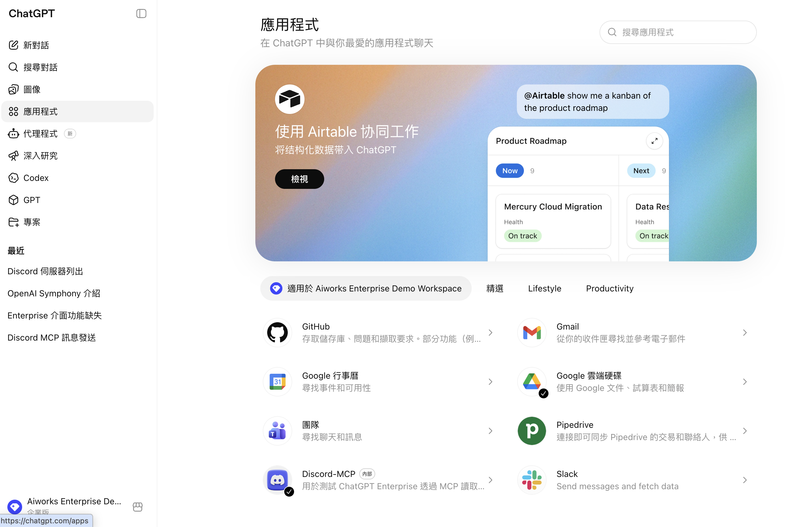
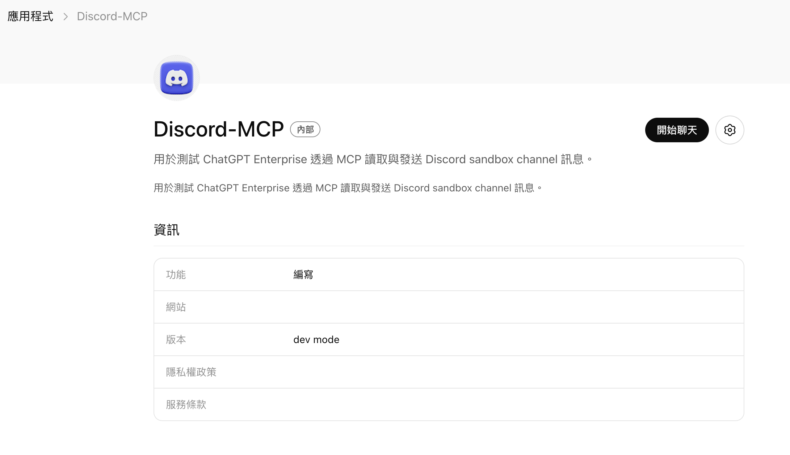
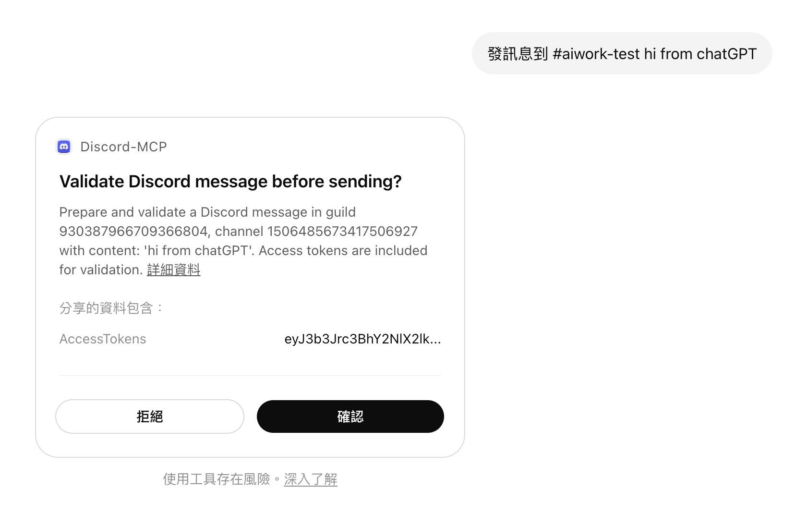
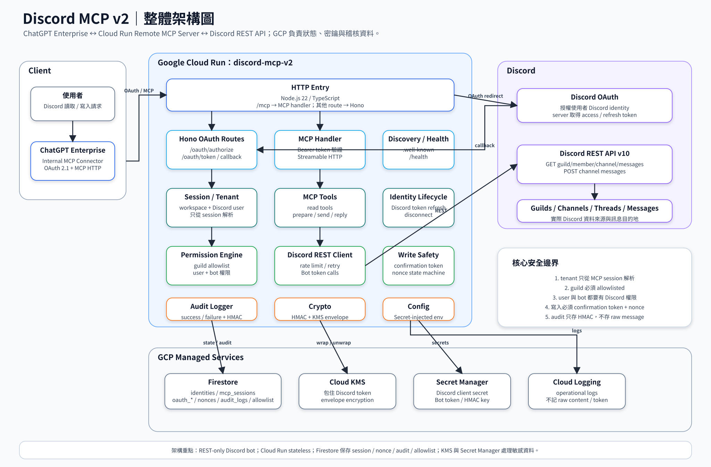

ChatGPT 多了一個 Discord 幫手,可以幫你整理 Discord 對話、找資訊、草擬回覆。
它只能看到你在 Discord 本來看得到的頻道。不會多、也不會少。
30 秒,一次設定終身用
在應用程式列表找到 Discord-MCP(紫色 Discord logo,標記「內部」)。

第一次使用會跳到 Discord 登入頁,選你的帳號 → 按 授權。

授權後不會再跳登入。讀取動作直接執行;第一次發訊息會看到下面這個確認框 —— 按 確認 就送出。

不會跳確認,直接執行
| 你想做 | 直接這樣打 |
|---|---|
| 看有哪些可用的 Discord 伺服器 | 用 Discord-MCP 列出我的 Discord 伺服器 |
| 看某 server 的頻道 | 列出 Aiworks 團隊小空間 的所有頻道 |
| 整理某頻道近期討論 | 整理本週 #channel-name 的討論重點 |
| 找特定資訊 | #channel-name 上次討論到 X 的結論是什麼? |
| 跨頻道補進度 | 整理今天 #channel-A、#channel-B、#channel-C 的重點 |
| 看討論串 | 讀取 #channel-name 裡 [thread 名] 那個討論串 |
| 看最近有誰 @ 我 | 整理過去 24 小時有人 @ 我的訊息,哪些重要、建議怎麼回 |
會跳一個確認框,避免誤送
| 你想做 | 直接這樣打 |
|---|---|
| 發訊息 | 發訊息到 #channel-name:今天的會議改到 4 點 |
| 回覆某則訊息 | 回覆 [某則訊息]:收到,明天回你 |
| 只草擬不送 | 幫我草擬一則回覆放在 #channel-name,內容大概是 ...不要說「送出」就好 |
送出的訊息會自動帶署名 footer:
不會偽裝成你本人發。內容含 @everyone / @role 也不會真的觸發通知。
需要重置授權時
| 你想做 | 打 |
|---|---|
| 解除 Discord 授權 | 斷開 Discord-MCP 連線 |
7 個高頻場景,看著抄
整理昨天到今天 #channel-A、#channel-B、#channel-C 我可能要知道的重點整理今天 #standup 大家報告的進度,列出 action items我是新人,從 #onboarding 跟 #general 幫我整理這週該知道的 5 件事上次 #marketing 討論到 Q3 campaign 的最終決定是什麼?幫我草擬一則公告要發到 #announcement,提醒大家明天放颱風假#channel-name 最近有幾則 @我,幫我整理哪些重要、建議怎麼回這位同事剛提到 [關鍵字],他指的可能是哪份歷史討論?先說好,避免誤會
底層怎麼運作 — 給好奇的人看
sequenceDiagram
participant U as 使用者
participant C as ChatGPT Connector
participant M as Discord MCP Server
participant D as Discord OAuth
participant A as Discord REST API
participant DB as Firestore
U->>C: 連接 Discord MCP
C->>M: /oauth/authorize<br/>PKCE + client_id
M->>DB: 建立 pending auth<br/>綁定 workspaceId + state
M-->>U: Redirect 到 Discord OAuth
U->>D: 用自己的 Discord 帳號登入並同意授權
D-->>M: /oauth/callback<br/>code + state
M->>D: exchange code
D-->>M: Discord user access token
M->>D: /users/@me
D-->>M: discordUserId / username
M->>DB: bind identity<br/>workspaceId + discordUserId<br/>加密儲存 Discord token
M-->>C: 回傳 MCP authorization code
C->>M: /oauth/token<br/>code + PKCE verifier
M->>DB: 建立 MCP session<br/>workspaceId + discordUserId
M-->>C: MCP access token<br/>綁定該 Discord user
C->>M: 呼叫 MCP tool<br/>Bearer MCP access token
M->>DB: resolve session<br/>還原 workspaceId + discordUserId
M->>A: 查 guild / channel / member / roles
A-->>M: Discord 即時權限資料
M->>M: 計算 user + bot effective permission
alt user 和 bot 都有權限
M->>A: 用 bot token 讀取或送出
A-->>M: 成功
M-->>C: 回傳結果
else 任一方沒權限
M-->>C: permission_denied
end
整體元件與資料流 — 點圖可看完整大圖

用 Codex(CLI / Desktop)? 設定方式看這頁 → Discord 助理 × Codex 設定指南